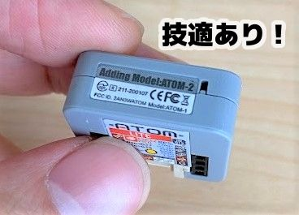
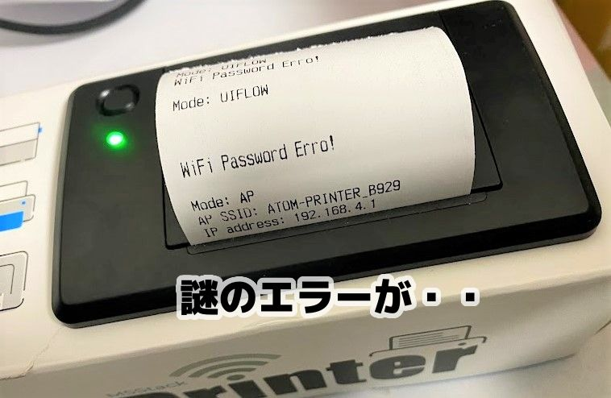
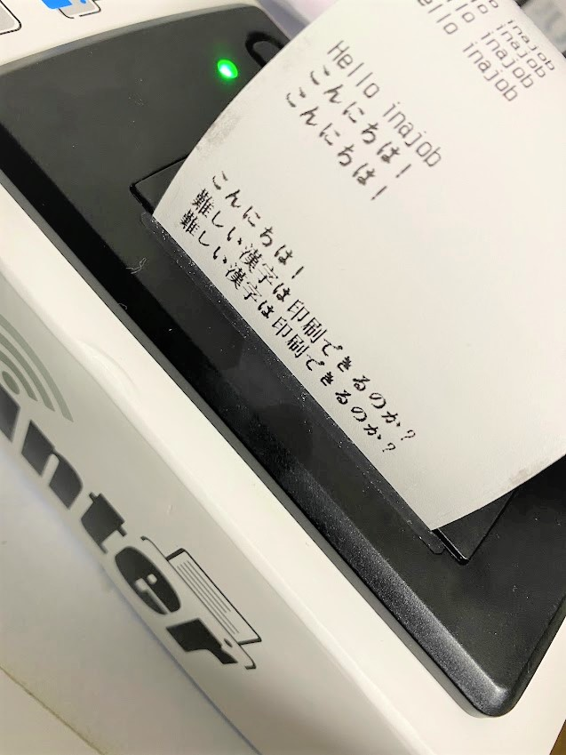
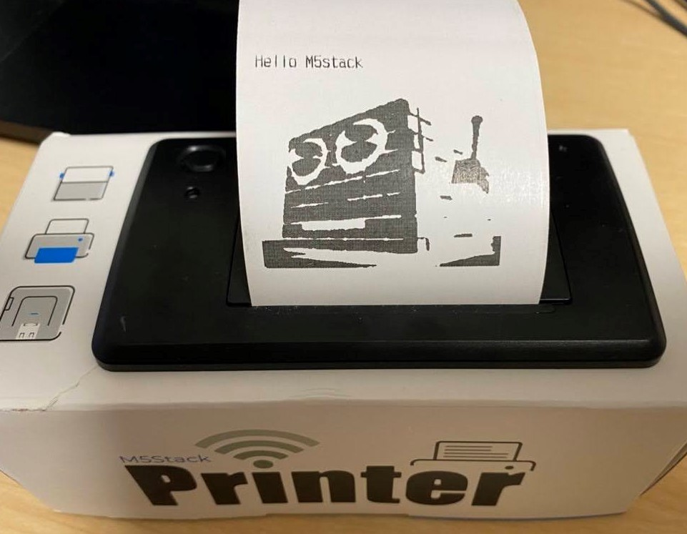
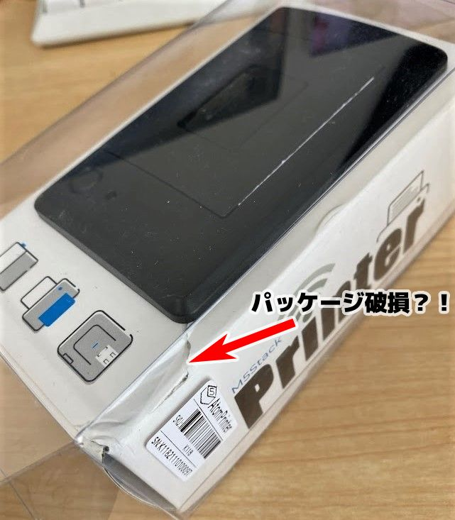

この記事はBanggoodの提供でお届けします。
以前紹介したようにこのブログはBanggoodと提携させていただいており、今回紹介するM5Stack ATOM Printerも、Banggoodからいただいたものとなります。（M5Stack ATOM Printerのレビューがしたい！と言ったのは自分なので、Banggoodが無理やりこの商品を押しているわけではなく、inajobの一押しアイテム！、という感じです。）
ATOM Thermal Printer Kit とは
この商品はM5Stack社のATOM Liteという小型モジュールに感熱紙プリンタがくっついたものです。
ATOM LiteのコアはESP32-Pico-D4で、もちろんWiFiをサポートしています。
WiFiで指示を受け取り、感熱紙に文字や画像を印刷するようなプロトタイピングを迅速に開発できます。
仕様
- ATOM Lite: ESP32-Pico-D4 4MB Flash
- 技適付き
- ボール紙による筐体
- UARTによる制御

使用前の準備
この製品を使うためには、12VのACアダプタが必要です、また書き込みのためにはATOM Liteに接続するためのUSB Type-Cケーブルが必要です。
ACアダプタは12V2.5A以上のものが必要と書いてありましたが、我が家には2Aの物しかなく、これで動かしています。
12VのACアダプタをつなげれば・・と思いましたが、どうも初期ファームウェアに不具合があるようで、WiFiに接続できないエラーが延々と出力されてしまいます。
この問題はM5Stack社に報告したので、近いうちに修正されると思いますが、同様の問題に遭遇した人のために修正方法を記載しておきます。
ファームウェアの不具合による問題からの復旧（症状が起きている場合のみ）
症状としては、AC12Vで電源を入れた時にプリンタから「Mode: UIFLOW」「WiFi Password Erro！」という文字が延々と印刷されるというものです。 期待する挙動としてはATOM Liteのボタンを押すことでModeがAPとなることなのですが、どうもこれがうまく動かないようです。

ここまでの症状が同じ場合は、以下の手順で復旧が出来ます。
この初期ファームウェアのソースコードは以下に存在しています。
https://github.com/m5stack/ATOM-PRINTER/blob/master/examples/FactoryTest/FactoryTest.ino
このリポジトリをGitを使い手元にCloneし、Arduino IDEで開きます。
Arduino IDEでATOM Liteの開発をするためにはUSBシリアルドライバのインストールと、ボードのインストール・ライブラリのインストールが必要です。以下を参考に設定します。
https://docs.m5stack.com/en/quick_start/atom/arduino
FactoryTest.inoがビルドできることを確認出来たら、少し内容を修正します。
具体的には、この80行目の後に preferences.putBool("PRINTER_MODE", APMode);という行を入れます。
https://github.com/m5stack/ATOM-PRINTER/blob/master/examples/FactoryTest/FactoryTest.ino#L130
この修正を行ったFactoryTest.inoを一度書き込んで実行すれば、後は元に戻したFactoryTest.inoでもうまく動作します。
おそらくこれはATOM Printerの製品の検品時に、テスト用のWiFiのAPに接続するテストを行っていることが原因です。
現在のファームウェアは一度設定されたWiFiに接続できることを前提に処理が組まれており、つながらない場合は本体をリセットし続けて接続できるのを待ってしまいます。
しかし当然我が家にはATOM Printerの検品時に接続していたWiFiがあるわけもなく、何度リセットしても接続できません。
WiFiの設定は不揮発メモリに保持されているため、ファームウェアを書き直してもWiFiの設定が消えません。
ここに記載した処理は、WiFiの設定が存在していてもそれを無視してAPモードとして振舞うように不揮発メモリに記録するというものです。
一度モードを不揮発メモリに記録すれば、この問題は解消します。
おそらくこの問題は近いうちに解消すると思います。手元でこの問題が起こらない場合はこの対応は不要です。
動作確認
さてお待ちかねの動作確認です。
APモードで起動したATOM PrinterはWiFiのAPとして振舞います。 手元のスマートフォンなどで、WiFiスポットを調べてみると ATOM Printerという文字を含むSSIDが見えると思います。 そのWiFiにスマートフォンを接続し、ATOM Printerから印字されたIPアドレスにブラウザからアクセスすることで、プリンタを制御するためのWebUIを表示することが出来ます。
この画面からは、任意の文字列、バーコード、QRコードをATOM Printerに送信することが出来ます。
送信すると、ATOM Printerで印刷が行われます。
英字はもちろん日本語も問題なく印刷することが確認できました。

独自のプログラムを書き込んでみる
元々のプログラムを書き換えて、動作をカスタマイズしてみます。
ATOM Printerのプリンタ制御の機能は一応ライブラリ化されており、簡単に使うことが出来ます。
試しに起動すると “Hello inajob"と表示するプログラムを作ってみます。
#include <M5Atom.h>
#include "PrinterApi.h"
HardwareSerial AtomSerial(1);
Printer atomPrinter;
void setup(){
M5.begin(true, false, true);
atomPrinter.Set_Printer_Uart(AtomSerial, 23, 33, 9600);
atomPrinter.Printer_Init();
atomPrinter.NewLine_Setting(0x0A);
atomPrinter.Printer_Init();
atomPrinter.Print_ASCII("Hello inajob");
atomPrinter.Print_NewLine(2);
}
void loop()
{
M5.update();
}
画像を印刷してみる
ATOM Printer公式のライブラリでは文字、バーコード、QRコードしか対応されていませんが、このプリンタはビットマップ画像を印刷する機能もあるようなので、これを試してみます。
ATOM Printerのライブラリを使わずとも、シリアル通信で制御信号を直接送ることでプリンタを制御することが出来ます。
この制御信号はATOM Printerの箱の側面にも一覧が載っています。
その中に「Print BMP」というのがあり、これを使うことで任意の画像を印刷させることが出来ます。
この機能を使うためには、プリンタ用に画像ファイルを変換する必要がありますが、うれしいことにこの変換ツールを公開してくれている人がいました。
https://m5stack.lang-ship.com/tools/image2data/?format=1bit_2
このツールに2値のビットマップ画像をアップロードすることで、Arduinoで利用できる配列のソースコードに変換することが出来ます。
という事で、このツールで生成したソースコードを利用して以下のようなプログラムを書いてみました。
#include <M5Atom.h>
#include "PrinterApi.h"
HardwareSerial AtomSerial(1);
Printer atomPrinter;
// ここに上記ツールで作ったデータを貼り付ける
void Print_BMP(int width, int height, const unsigned char *data, int mode, int wait) {
AtomSerial.write(0x1D);
AtomSerial.write(0x76);
AtomSerial.write(0x30); // 0
AtomSerial.write(mode); // m
AtomSerial.write((width / 8) & 0xff); // xL
AtomSerial.write((width / 256 / 8) & 0xff); // xH
AtomSerial.write((height) & 0xff); // yL
AtomSerial.write((height / 256) & 0xff); // yH
for (int i = 0; i < (width / 8 * height); i++) {
AtomSerial.write(data[i]); // data
delay(wait);
}
}
void setup(){
M5.begin(true, false, true);
atomPrinter.Set_Printer_Uart(AtomSerial, 23, 33, 9600);
atomPrinter.Printer_Init();
atomPrinter.NewLine_Setting(0x0A);
atomPrinter.Printer_Init();
atomPrinter.Print_ASCII("Hello M5stack");
atomPrinter.Print_NewLine(2);
atomPrinter.Printer_Init();
Print_BMP(352, 350, img, 0x30, 10);
}
void loop()
{
M5.update();
}
無事画像を印刷することが出来ました

思いつく応用例
ATOM Prnterの機能を一通り試しました。要はWiFi＋レシートプリンタという構成で、BMP印刷機能を使えばどんな物でも印刷可能です。
思いつく活用例としては・・
- PCやスマートフォンで選択したレシピを印刷する
- Twitterの特定のキーワードのついた発言を印刷し続ける
- 朝のニューストピックを印刷し、手帳に挟んで通勤中に読めるようにする
- 4コマ漫画を印刷する
- 感熱シールを使うことで宛先ラベルなどを作る
などが思いつきました。
ちょっと気になったところ
ATOM Printerは面白い製品ですが、ちょっと訳アリの製品でもあるな、と感じました。 買ってみて「思ったのと違う！」とならないためにも、自分が気づいた問題点を書いておきます。
筐体が紙でできており、運搬時に破損しやすい
自分が受け取ったATOM Printerは角がぶつけられて、曲がってしまっていました。 これは運送業者が悪いというよりは、この製品の耐久性や、梱包の問題だと感じました。

本体が壊れて届くことはないと思いますが、筐体が凹んでいるのはもう仕様かな、、という感じでした
初期ファームウェアのままでは試すことが出来ない
前述のように初期ファームウェアが期待通り動作せず、一度NVSの内容をクリアするか、適切に書き直す必要があります。
ATOM Printerは開発者向け製品で、どうせ使っていく中で初期ファームウェアから書き換えをする前提の製品ではあるものの、出鼻をくじかれた感は否めません。おそらく近いうちに初期ファームウェアが改良され、このような問題は無くなると思っています。
筐体に書かれている制御コードが間違っている
筐体に制御コードが書かれていますが、BMP Printの制御コードの記載がおかしいです。（Modeが無い） まぁわかっていれば大丈夫なのですが、少し残念です。
参考
この記事を作るにあたりLang-shipさんの記事に非常に助けられました。合わせて読んでみるとATOM Printerのことがもっと詳しくわかりますよ！
公式ページもとても参考になりました
まとめ
ATOM Printerがあれば、プリンタを使ったプロトタイピングを、ハードウェアの設計なしに実現することが出来ます。
WiFi経由で接続できるという事で、スマートフォンアプリや、PC、M5Stackなど、様々な機器と連携したソリューションを作ることが出来ます。
プリンタを使った面白いアイデアのある人は是非購入してみてください！
クーポンコード
さて、ここまで紹介してきたM5Stack ATOM Printerですが、今回Banggoodの提供という事で、$69.99 → $62.99で購入できるクーポンを頂いています。
コード： BGJPM5 (2/28まで)
M5Stack ATOM Printerをカートに入れ、チェックアウト後にこのクーポンコードを入力することで割引を受けることが出来ます。
有効期限は2022/02/28なので、買いたい方はお早めにどうぞ！（加えて、在庫に限りがあると思うのでお早目に！）


関連記事